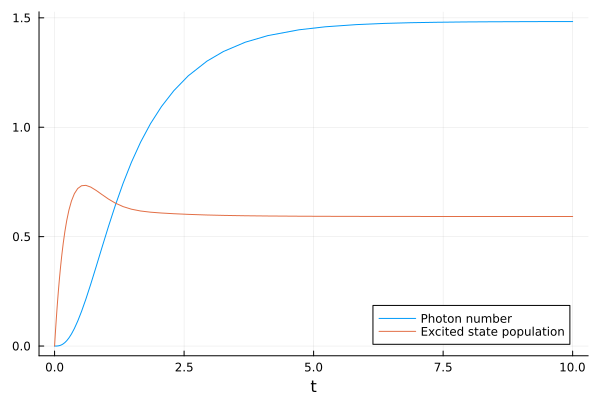

Tutorial
The basic usage is probably best illustrated with a brief example. In the following, we solve a simple model for a single-atom laser.
We start by loading the package, defining some symbolic parameters and the photonic annihilation operator a as well as the atomic transition operator σ, which denotes a transition from level j to level i as σ(i,j). This allows us to quickly write down the Hamiltonian and the collapse operators of the system with their corresponding decay rates.
using QuantumCumulants
# Define parameters
@cnumbers Δ g γ κ ν
# Define hilbert space
hf = FockSpace(:cavity)
ha = NLevelSpace(:atom,(:g,:e))
h = hf ⊗ ha
# Define the fundamental operators
@qnumbers a::Destroy(h) σ::Transition(h)
# Hamiltonian
H = Δ*a'*a + g*(a'*σ(:g,:e) + a*σ(:e,:g))
# Collapse operators
J = [a,σ(:g,:e),σ(:e,:g)]
rates = [κ,γ,ν]Now, we define a list of operators of which we want to compute the mean-field equations. We will only consider products of two operators. This is because later we will compute the dynamics of the system up to second order.
# Derive a set of equations
ops = [a'*a,σ(:e,:e),a'*σ(:g,:e)]
eqs = meanfield(ops,H,J;rates=rates)\begin{align} \frac{d}{dt} \langle a^\dagger a\rangle =& -1.0 \kappa \langle a^\dagger a\rangle -1 i g \langle a^\dagger {\sigma}^{{ge}}\rangle + 1 i g \langle a {\sigma}^{{eg}}\rangle \\ \frac{d}{dt} \langle {\sigma}^{{ee}}\rangle =& \nu -1.0 \gamma \langle {\sigma}^{{ee}}\rangle + 1 i g \langle a^\dagger {\sigma}^{{ge}}\rangle -1 i g \langle a {\sigma}^{{eg}}\rangle -1.0 \nu \langle {\sigma}^{{ee}}\rangle \\ \frac{d}{dt} \langle a^\dagger {\sigma}^{{ge}}\rangle =& -0.5 \gamma \langle a^\dagger {\sigma}^{{ge}}\rangle + 1 i g \langle {\sigma}^{{ee}}\rangle -0.5 \kappa \langle a^\dagger {\sigma}^{{ge}}\rangle -0.5 \nu \langle a^\dagger {\sigma}^{{ge}}\rangle -1 i g \langle a^\dagger a\rangle + 2 i g \langle a^\dagger a {\sigma}^{{ee}}\rangle + 1 i \Delta \langle a^\dagger {\sigma}^{{ge}}\rangle \end{align}
To obtain a closed set of equations, we expand higher-order products to second order.
# Expand the above equations to second order
eqs_expanded = cumulant_expansion(eqs,2)\begin{align} \frac{d}{dt} \langle a^\dagger a\rangle =& -1.0 \kappa \langle a^\dagger a\rangle -1 i g \langle a^\dagger {\sigma}^{{ge}}\rangle + 1 i g \langle a {\sigma}^{{eg}}\rangle \\ \frac{d}{dt} \langle {\sigma}^{{ee}}\rangle =& \nu -1.0 \gamma \langle {\sigma}^{{ee}}\rangle + 1 i g \langle a^\dagger {\sigma}^{{ge}}\rangle -1 i g \langle a {\sigma}^{{eg}}\rangle -1.0 \nu \langle {\sigma}^{{ee}}\rangle \\ \frac{d}{dt} \langle a^\dagger {\sigma}^{{ge}}\rangle =& -0.5 \gamma \langle a^\dagger {\sigma}^{{ge}}\rangle + 1 i g \langle {\sigma}^{{ee}}\rangle -0.5 \kappa \langle a^\dagger {\sigma}^{{ge}}\rangle -0.5 \nu \langle a^\dagger {\sigma}^{{ge}}\rangle -1 i g \langle a^\dagger a\rangle + 2 i g \left( \langle a\rangle \langle a^\dagger {\sigma}^{{ee}}\rangle + \langle {\sigma}^{{ee}}\rangle \langle a^\dagger a\rangle + \langle a^\dagger\rangle \langle a {\sigma}^{{ee}}\rangle -2 \langle a^\dagger\rangle \langle a\rangle \langle {\sigma}^{{ee}}\rangle \right) + 1 i \Delta \langle a^\dagger {\sigma}^{{ge}}\rangle \end{align}
The first-order contributions are always zero and can therefore be neglected. You can try adding a and σ(:g,:e) to the list of operators ops in order to see that yourself. Or, even more conveniently, you can use complete(eqs_expanded), which will automatically find all missing averages and compute the corresponding equations.
Here, though, we will proceed by finding the missing averages, and neglecting them as zero using the substitute and simplify function from Symbolics.
# Find the missing averages
missed = find_missing(eqs_expanded)
# Substitute them as zero
subs = Dict(missed .=> 0)
using Symbolics
eqs_nophase = simplify(substitute(eqs_expanded, subs))\begin{align} \frac{d}{dt} \langle a^\dagger a\rangle =& -1.0 \kappa \langle a^\dagger a\rangle -1 i g \langle a^\dagger {\sigma}^{{ge}}\rangle + 1 i g \langle a {\sigma}^{{eg}}\rangle \\ \frac{d}{dt} \langle {\sigma}^{{ee}}\rangle =& \nu -1.0 \gamma \langle {\sigma}^{{ee}}\rangle + 1 i g \langle a^\dagger {\sigma}^{{ge}}\rangle -1 i g \langle a {\sigma}^{{eg}}\rangle -1.0 \nu \langle {\sigma}^{{ee}}\rangle \\ \frac{d}{dt} \langle a^\dagger {\sigma}^{{ge}}\rangle =& -0.5 \gamma \langle a^\dagger {\sigma}^{{ge}}\rangle + 1 i g \langle {\sigma}^{{ee}}\rangle -0.5 \kappa \langle a^\dagger {\sigma}^{{ge}}\rangle -0.5 \nu \langle a^\dagger {\sigma}^{{ge}}\rangle -1 i g \langle a^\dagger a\rangle + 1 i \Delta \langle a^\dagger {\sigma}^{{ge}}\rangle + 2 i g \langle {\sigma}^{{ee}}\rangle \langle a^\dagger a\rangle \end{align}
Finally, we can convert the MeanfieldEquations to an ODESystem as defined in ModelingToolkit which can be solved numerically with OrdinaryDiffEq.
# Generate an ODESystem
using ModelingToolkit
@named sys = ODESystem(eqs_nophase)
# Solve the system using the OrdinaryDiffEq package
using OrdinaryDiffEq
u0 = zeros(ComplexF64,length(ops))
p = (Δ, g, γ, κ, ν)
p0 = p .=> (0, 1.5, 0.25, 1, 4)
prob = ODEProblem(sys,u0,(0.0,10.0),p0)
sol = solve(prob,RK4())Just as with variables in ModelingToolkit, the solution of the respective averages can be accessed with a getindex method. In the following we extract and plot the photon number and the atomic excited state population by indexing the solution:
using Plots
n = real.(sol[a'*a])
pe = real.(sol[σ(:e,:e)])
plot(sol.t, n, label="Photon number", xlabel="t")
plot!(sol.t, pe, label="Excited state population")